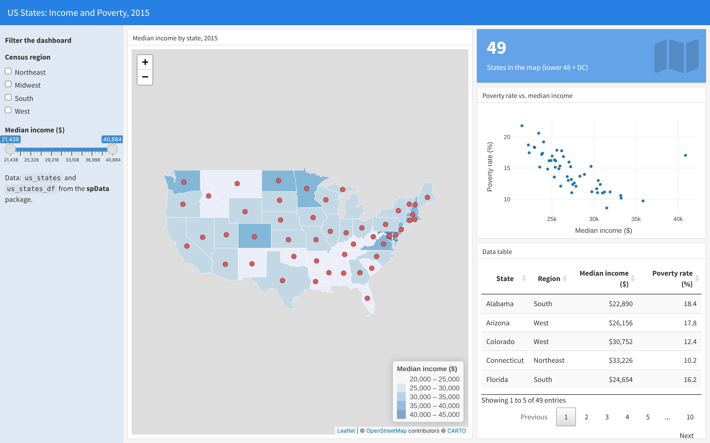
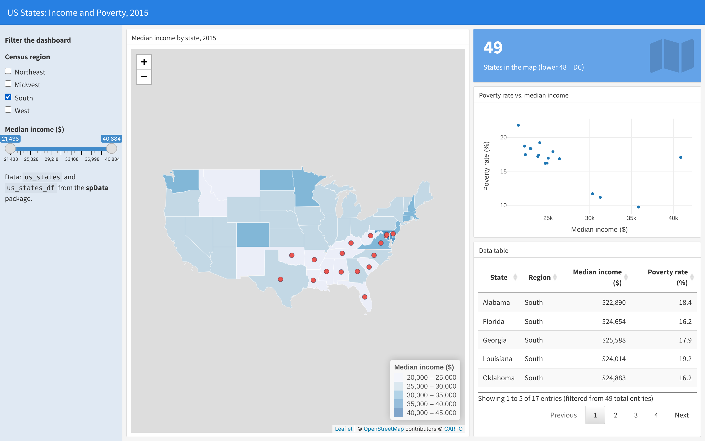
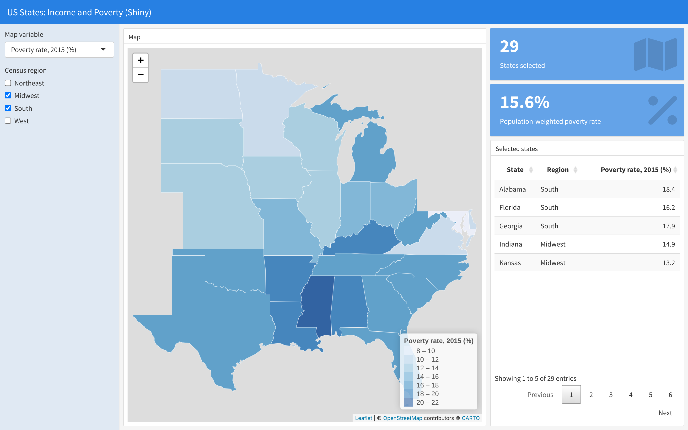

23 Interactive Map Dashboards
By the end of this chapter you should be able to:
- Explain what a dashboard is, how it differs from a report, and what makes a good one.
- Make an interactive choropleth map with leaflet, with a palette function, legend, labels, and popups, or with tmap in view mode.
- Lay out a dashboard with flexdashboard: a sidebar, columns, and panels holding a map, a value box, a chart, and a table.
- Link the views with crosstalk, and work around its limits on polygons.
- Add Shiny inputs, reactive expressions, and render functions so a dashboard recalculates.
- Choose between a static and a Shiny dashboard, and share each one.
All semester you have made maps and analyses and written them up as R Markdown reports. This chapter turns that work into an interactive dashboard: a single web page where a reader can explore a map, a chart, and a table that respond to each other. We build one example dashboard step by step, first from interactive widgets that run in any browser, and then with Shiny. Everything is still an R Markdown file, so it fits the workflow you already know.
leaflet, flexdashboard, crosstalk, and Shiny build web pages, so they can’t run in the live code cells of this book. The code here is shown as plain blocks, with screenshots of the results. Copy it into RStudio to try it. Install the packages once with:
install.packages(c("flexdashboard", "leaflet", "DT", "plotly", "crosstalk", "shiny"))23.1 What is a dashboard?
A dashboard shows key information on one screen so people can monitor and explore it. It usually has several linked views, such as a map, charts, a table, and a few headline numbers, and it is interactive: readers can zoom, hover, filter, and select. You have certainly used one. During COVID-19, case dashboards from universities and state health departments were checked daily by millions of people, and most were built around a map. Air quality, weather, and traffic dashboards, and city and state open data portals, work the same way. A map is often the anchor, because readers first ask “where?”
23.1.1 Reports and dashboards do different jobs
| R Markdown report | Dashboard | |
|---|---|---|
| Order | Tells a story in a fixed order | Reader explores in any order |
| Maps and charts | Static | Interactive and linked |
| Text | Explains every result | Short labels; the visuals carry the message |
| Best for | An argument or analysis write-up | Monitoring and exploring data |
Your assignments have been reports: you guide the reader through an analysis step by step. A dashboard hands control to the reader. That means less text and more careful design, because the visuals have to explain themselves. A good project often has both: a report that explains the analysis (Chapter 20) and a dashboard that lets people explore the data.
23.1.2 What makes a good dashboard
- Answer a few clear questions, and leave out everything else. Write down two or three questions before you start, and cut anything that doesn’t help answer them.
- Put the most important view, often the map, largest and first.
- Use the map design rules you already know (Chapter 10): sensible classification, a clear legend with units, and a data source.
- Link the views, so a filter or selection updates them together.
- Design for everyone. Never use color alone to carry meaning; add labels and a table. A table beside the map gives screen reader users and colorblind readers the same information. Check color contrast, and test with a keyboard and on a phone.
Think of a dashboard you have used: for weather, sports, a class, or public health. What two or three questions does it answer? What would you cut, and what is missing?
23.2 The R dashboard toolkit
| Package | What it does |
|---|---|
| flexdashboard | Lays out an R Markdown file as a dashboard |
| leaflet | Interactive web maps (tmap makes them too, with tmap_mode("view")) |
| DT | Searchable, sortable data tables |
| plotly | Interactive charts |
| crosstalk | Links widgets, so a filter updates them all |
| shiny | Runs R code in response to what the reader does |
leaflet, DT, and plotly are all htmlwidgets: R functions that produce JavaScript, which runs in the browser with no R needed.
23.2.1 Two kinds of interactivity
The most important design decision is which of two kinds of dashboard to build:
| htmlwidgets + crosstalk | Shiny | |
|---|---|---|
| How it works | Knit once to a single HTML file; interactivity runs in the browser | R runs on a server while people use it |
| What readers can do | Show and hide the data that was knitted in | Trigger any R code: recalculate statistics, rebuild maps, query APIs |
| Sharing | No R needed; share it like any file | Needs a server |
A static dashboard can be emailed, uploaded to Canvas, or hosted on GitHub Pages, and it works with no R installed. But it can only show and hide the data that was baked in when you knitted it. Shiny can do anything R can do in response to a click, like recalculating a weighted average or refitting a model, but it needs a running R process. Start static, and move to Shiny only when you need it.
23.2.2 Our example: income and poverty by state
Figure 23.1 shows where we are headed. A sidebar holds filters. The large map shows median income by state. On the right are a value box, a scatter plot of poverty rate against median income, and a table.

The data are us_states and us_states_df from the spData package, the same data you joined in Chapter 15, so everything loads with library() and nothing needs downloading. Preparing the data looks just like the joins chapter:
library(sf)
library(tidyverse)
library(spData)
states <- us_states |>
left_join(us_states_df, by = c("NAME" = "state")) |>
mutate(
REGION = fct_recode(REGION, Northeast = "Norteast"), # fix a typo in spData
poverty_rate_15 = poverty_level_15 / total_pop_15 * 100
) |>
st_transform(4326) # leaflet expects WGS84 longitude and latitudeThree details. spData spells the Northeast region “Norteast”, so fct_recode() from forcats fixes the label. poverty_level_15 is a count of people, so dividing by population gives a rate. And leaflet works in longitude and latitude on WGS84, EPSG:4326 (Chapter 12), so we transform the data. Doing the data preparation once, at the top of the file, keeps the rest of the dashboard simple.
23.3 Interactive maps with leaflet
The map is the heart of the dashboard.
23.3.1 Your first leaflet map
library(leaflet)
leaflet(states) |>
addProviderTiles(providers$CartoDB.Positron) |>
addPolygons(color = "white", weight = 1,
fillColor = "steelblue", fillOpacity = 0.6)A leaflet map is built in layers, like tmap and ggplot2, but the layers are joined with the pipe instead of +. leaflet() creates an empty map from the data. addProviderTiles() adds basemap tiles; CartoDB Positron is a light gray basemap that works well under choropleth colors. addPolygons() draws the states. Run this in RStudio and the map appears in the Viewer pane, where you can already zoom and pan.
23.3.2 Coloring a choropleth
Unlike tmap, leaflet doesn’t classify data for you. First you build a palette function: a function that takes data values and returns colors.
pal <- colorBin("Blues", domain = states$median_income_15, bins = 5)
leaflet(states) |>
addProviderTiles(providers$CartoDB.Positron) |>
addPolygons(fillColor = ~pal(median_income_15),
fillOpacity = 0.8, color = "white", weight = 1) |>
addLegend(pal = pal, values = ~median_income_15,
title = "Median income ($)")colorBin() takes a ColorBrewer scheme, here Blues, and the range of the data, and returns a function that turns values into colors. The tilde in ~pal(median_income_15) tells leaflet to look up the column in the data. Use the same palette in addLegend() so the legend matches the map. The other palette functions are colorNumeric() for a continuous ramp, colorQuantile() for quantile classes, and colorFactor() for categories.
23.3.3 Labels, popups, and highlighting
Interactivity is what makes a web map worth the effort:
addPolygons(
fillColor = ~pal(median_income_15), fillOpacity = 0.8,
color = "white", weight = 1,
label = ~NAME, # shows on hover
popup = ~paste0("<b>", NAME, "</b><br>Poverty rate: ",
round(poverty_rate_15, 1), "%"), # shows on click
highlightOptions = highlightOptions(
weight = 3, color = "#13294B", bringToFront = TRUE)
)A label appears when the reader hovers over a state, and a popup when they click. Popups accept simple HTML, so the state name can be bold, with a line break after it. highlightOptions() outlines the state under the mouse, so readers know exactly which polygon they are on. Labels also help accessibility, because readers don’t have to match a color to the legend.
23.3.4 A shortcut: tmap in view mode
If you prefer tmap, you don’t have to learn leaflet first. Chapter 10 showed that tmap_mode("view") turns tmap code into an interactive map, and that map is a leaflet map:
library(tmap)
tmap_mode("view") # interactive; tmap_mode("plot") for static
tm_shape(states) +
tm_polygons(
fill = "median_income_15",
fill.scale = tm_scale_intervals(n = 5, style = "jenks",
values = "brewer.blues"),
fill.legend = tm_legend(title = "Median income ($)"),
id = "NAME",
popup.vars = c("median_income_15", "poverty_rate_15"))id sets the hover label, and popup.vars chooses the variables shown on click. tmap is quicker to write and classifies the data for you. leaflet gives you more control and works with crosstalk, which we use below. Both work in a dashboard.
23.4 Laying out a flexdashboard
23.4.1 A flexdashboard is an R Markdown file
A flexdashboard is an R Markdown file with a different output format in its YAML header. You knit it the same way you knit your assignments.
---
title: "US States: Income and Poverty, 2015"
output:
flexdashboard::flex_dashboard:
orientation: columns
vertical_layout: fill
---orientation: columns lays out the page as side-by-side columns; rows is the other option. vertical_layout: fill stretches the panels to fill the browser window; scroll lets the page scroll instead. In RStudio, File > New File > R Markdown > From Template > Flex Dashboard starts one for you.
23.4.3 Value boxes, tables, and charts
Each of the other panels gets one of these:
# Headline number
valueBox(nrow(states), caption = "States in the map", icon = "fa-map")
# Searchable, sortable table
datatable(state_table, rownames = FALSE, options = list(pageLength = 5))
# Interactive scatter plot
plot_ly(state_table, x = ~median_income_15, y = ~poverty_rate_15,
text = ~NAME, type = "scatter", mode = "markers")A value box shows a single headline number with an icon from Font Awesome. datatable() from DT makes a table readers can search and sort, and plot_ly() makes a scatter plot with hover labels. The table and chart use state_table, a copy of the data without geometry, made with st_drop_geometry() and select(). Tables and charts don’t need polygons, and dropping the geometry keeps the file small.
23.4.4 Linking views with crosstalk
crosstalk makes the views talk to each other:
library(crosstalk)
# Same key and group = linked widgets
shared_table <- SharedData$new(state_table, key = ~NAME, group = "states")
# Filters go in the sidebar
filter_checkbox("region", "Census region", shared_table, ~REGION)
filter_slider("income", "Median income ($)", shared_table, ~median_income_15)Wrap a data frame in SharedData$new(), with a key that identifies each row, here the state name, and a group name. Pass shared_table instead of state_table to datatable() and plot_ly(), and every widget built from a SharedData object in the same group is linked: filtering one filters the others, and selecting points in the scatter plot highlights the same states in the table. filter_checkbox() and filter_slider() make filter controls that work without Shiny; they go in the sidebar.
23.4.5 crosstalk and leaflet: points, not polygons
Here is a limitation you will run into: leaflet links only point layers, markers and circles, with crosstalk. A crosstalk filter won’t hide polygons, so a region filter can’t hide states on a choropleth.
A simple workaround is one point per state. Draw the choropleth normally as context, then add the points as a shared layer on top:
state_points <- states |>
st_transform(5070) |> # find points in a projected CRS...
st_point_on_surface() |>
st_transform(4326) |> # ...then go back to longitude and latitude
select(NAME, REGION, median_income_15, poverty_rate_15)
shared_points <- SharedData$new(state_points, key = ~NAME, group = "states")
# in the map chunk, after addPolygons():
addCircleMarkers(data = shared_points, radius = 5, label = ~NAME)st_point_on_surface() is better than st_centroid() here, because its point always falls inside the polygon. Run it on projected data, such as EPSG:5070, and transform the points back to 4326 afterward.
Figure 23.3 shows the result. The reader has checked only the South: the points on the map, the scatter plot, and the table all show only the 17 southern states. The choropleth colors and the value box didn’t change, because value boxes are fixed when you knit. That is the static dashboard’s limit. Even so, this single HTML file is already a useful, shareable product.

In Figure 23.3, a reader filtered to the South but the value box still says 49. Is that misleading? How could you change the dashboard’s labels so a reader isn’t confused, without switching to Shiny?
23.5 Adding Shiny
23.5.1 When do you need Shiny?
Use Shiny when a reader’s choice should trigger new R calculations, not just hide data:
- Filter the polygons themselves on the map.
- Update headline numbers, such as an average for the selected states.
- Let readers choose which variable to map.
- Rerun a model or query an API with the reader’s choices.
In a flexdashboard, add one line, runtime: shiny, to the YAML header. Then you need three pieces: inputs that collect the reader’s choices, reactive expressions that recompute data, and render functions that redraw the outputs.
23.5.3 Reactive data and render functions
selected_states <- reactive({
req(input$region)
states |> filter(REGION %in% input$region)
})
renderLeaflet({
df <- selected_states()
val <- df[[input$variable]]
pal <- colorBin("Blues", domain = val, bins = 5)
leaflet(df) |> addPolygons(fillColor = pal(val))
})A reactive expression is code that reruns automatically when the inputs it uses change. selected_states filters the data to the checked regions, and req() stops it from running if no region is checked. You call it like a function: selected_states().
Render functions, such as renderLeaflet(), renderValueBox(), and renderDT(), draw outputs. Because this renderLeaflet() uses both selected_states() and input$variable, Shiny redraws the map whenever either changes. You don’t write any code to watch the inputs; Shiny tracks the dependencies for you. That is the core idea of reactive programming. (The full app, at the end of the chapter, also adds basemap tiles, labels, and a legend.)
Figure 23.4 shows the Shiny version. The reader chose poverty rate and unchecked the Northeast and West. Now the polygons themselves are filtered, the color classes are recalculated for just these states, and the value boxes show 29 states and a population-weighted poverty rate of 15.6% for them.

23.6 Sharing your dashboard
| Static (crosstalk) | Shiny |
|---|---|
| Knit to one self-contained HTML file | Needs R running on a server |
| Email it or upload it to Canvas | shinyapps.io or Posit Connect Cloud (free tiers) |
| Host it free on GitHub Pages or RPubs | Or a campus or company Shiny server |
| Open it in any browser | Run it locally with RStudio’s Run Document button |
23.6.1 Common pitfalls and fixes
- The map is blank or in the wrong place: transform to EPSG:4326 first.
- The file is huge or slow: simplify the polygons and drop columns you don’t need. Use
st_simplify()on projected data, orrmapshaper::ms_simplify(). - The legend and map disagree: use the same palette function for both.
- Missing values: set
na.colorin the palette, and say what gray means. - A filter doesn’t hide polygons: crosstalk only filters leaflet points.
- The design isn’t accessible: add labels and a table; never rely on color alone.
23.6.2 Looking ahead: Quarto dashboards
Quarto, the successor to R Markdown (and what built this book), has its own dashboard format: format: dashboard in the YAML header. The ideas are the same: rows, columns, cards instead of panels, value boxes, and a sidebar. It works with R and Python, and with leaflet, DT, plotly, and Shiny, so everything in this chapter carries over.
23.7 The complete example files
These are the two complete, tested dashboards from this chapter. Copy one into a new .Rmd file in RStudio and knit it (the static version) or click Run Document (the Shiny version).
---
title: "US States: Income and Poverty, 2015"
output:
flexdashboard::flex_dashboard:
orientation: columns
vertical_layout: fill
---
```{r setup, include=FALSE}
library(flexdashboard)
library(sf)
library(tidyverse)
library(spData)
library(leaflet)
library(DT)
library(plotly)
library(crosstalk)
# Join state polygons to the income and poverty table, then compute rates
states <- us_states |>
left_join(us_states_df, by = c("NAME" = "state")) |>
mutate(
REGION = fct_recode(REGION, Northeast = "Norteast"), # fix a typo in spData
poverty_rate_15 = poverty_level_15 / total_pop_15 * 100,
pop_change = (total_pop_15 - total_pop_10) / total_pop_10 * 100
) |>
st_transform(4326) # leaflet expects WGS84 longitude/latitude
# A plain table (no geometry) for the chart and the data table
state_table <- states |>
st_drop_geometry() |>
select(NAME, REGION, median_income_15, poverty_rate_15)
# One point per state: leaflet can filter points with crosstalk, not polygons
# (find points in a projected CRS, then go back to lon/lat)
state_points <- states |>
st_transform(5070) |>
st_point_on_surface() |>
st_transform(4326) |>
select(NAME, REGION, median_income_15, poverty_rate_15)
# SharedData objects in the same group are linked
shared_points <- SharedData$new(state_points, key = ~NAME, group = "states")
shared_table <- SharedData$new(state_table, key = ~NAME, group = "states")
```
Inputs {.sidebar}
-----------------------------------------------------------------------
**Filter the dashboard**
```{r filters}
filter_checkbox("region", "Census region", shared_table, ~REGION)
filter_slider("income", "Median income ($)", shared_table, ~median_income_15,
width = "100%")
```
Data: `us_states` and `us_states_df` from the **spData** package.
Column {data-width=600}
-----------------------------------------------------------------------
### Median income by state, 2015
```{r map}
pal <- colorBin("Blues", domain = states$median_income_15, bins = 5)
leaflet(options = leafletOptions(zoomSnap = 0.25)) |>
addProviderTiles(providers$CartoDB.Positron) |>
addPolygons(
data = states,
fillColor = ~pal(median_income_15),
fillOpacity = 0.8,
color = "white", weight = 1,
label = ~paste0(NAME, ": $", format(median_income_15, big.mark = ",")),
highlightOptions = highlightOptions(weight = 3, color = "#13294B",
bringToFront = TRUE)
) |>
addCircleMarkers(
data = shared_points,
radius = 5, color = "#13294B", weight = 1,
fillColor = "#E95550", fillOpacity = 1,
label = ~NAME
) |>
addLegend(data = states, pal = pal, values = ~median_income_15,
title = "Median income ($)", position = "bottomright")
```
Column {data-width=400}
-----------------------------------------------------------------------
### States {data-height=120}
```{r states-box}
valueBox(nrow(states), caption = "States in the map (lower 48 + DC)",
icon = "fa-map")
```
### Poverty rate vs. median income {data-height=380}
```{r scatter}
plot_ly(shared_table, x = ~median_income_15, y = ~poverty_rate_15,
text = ~NAME, type = "scatter", mode = "markers") |>
layout(xaxis = list(title = "Median income ($)"),
yaxis = list(title = "Poverty rate (%)"),
showlegend = FALSE) |>
highlight(on = "plotly_selected", off = "plotly_deselect")
```
### Data table {data-height=500}
```{r table}
datatable(shared_table,
rownames = FALSE,
colnames = c("State", "Region", "Median income ($)", "Poverty rate (%)"),
options = list(pageLength = 5, dom = "tip")) |>
formatCurrency("median_income_15", digits = 0) |>
formatRound("poverty_rate_15", digits = 1)
```---
title: "US States: Income and Poverty (Shiny)"
output: flexdashboard::flex_dashboard
runtime: shiny
---
```{r setup, include=FALSE}
library(flexdashboard)
library(shiny)
library(sf)
library(tidyverse)
library(spData)
library(leaflet)
library(DT)
states <- us_states |>
left_join(us_states_df, by = c("NAME" = "state")) |>
mutate(
REGION = fct_recode(REGION, Northeast = "Norteast"),
poverty_rate_15 = poverty_level_15 / total_pop_15 * 100
) |>
st_transform(4326)
# Choices for the variable menu: label shown = column name used
variables <- c("Median income, 2015 ($)" = "median_income_15",
"Poverty rate, 2015 (%)" = "poverty_rate_15",
"Population, 2015" = "total_pop_15")
```
Inputs {.sidebar}
-----------------------------------------------------------------------
```{r inputs}
selectInput("variable", "Map variable", choices = variables)
checkboxGroupInput("region", "Census region",
choices = levels(states$REGION),
selected = levels(states$REGION))
```
```{r reactive-data}
# Re-runs only when the region checkboxes change
selected_states <- reactive({
req(input$region)
states |> filter(REGION %in% input$region)
})
```
Column {data-width=650}
-----------------------------------------------------------------------
### Map
```{r map}
renderLeaflet({
df <- selected_states()
val <- df[[input$variable]]
pal <- colorBin("Blues", domain = val, bins = 5)
label <- names(variables)[variables == input$variable]
leaflet(df, options = leafletOptions(zoomSnap = 0.25)) |>
addProviderTiles(providers$CartoDB.Positron) |>
addPolygons(fillColor = pal(val), fillOpacity = 0.8,
color = "white", weight = 1,
label = paste0(df$NAME, ": ", format(round(val, 1), big.mark = ",")),
highlightOptions = highlightOptions(weight = 3, color = "#13294B")) |>
addLegend(pal = pal, values = val, title = label, position = "bottomright")
})
```
Column {data-width=350}
-----------------------------------------------------------------------
### States selected
```{r n-box}
renderValueBox({
valueBox(nrow(selected_states()), caption = "States selected", icon = "fa-map")
})
```
### Average poverty rate
```{r pov-box}
renderValueBox({
avg <- weighted.mean(selected_states()$poverty_rate_15,
selected_states()$total_pop_15)
valueBox(paste0(round(avg, 1), "%"), caption = "Population-weighted poverty rate",
icon = "fa-percent")
})
```
### Selected states
```{r table}
renderDT({
selected_states() |>
st_drop_geometry() |>
select(State = NAME, Region = REGION, value = all_of(input$variable)) |>
mutate(value = round(value, 1)) |>
datatable(rownames = FALSE,
colnames = c("State", "Region", names(variables)[variables == input$variable]),
options = list(pageLength = 5, dom = "tip"))
})
```23.8 Summary
- A dashboard puts a map, charts, a table, and key numbers on one interactive screen, with linked views. A report tells a story in order; a dashboard lets the reader explore.
- leaflet builds the map, in layers joined with the pipe: basemap tiles, polygons colored with a palette function, a legend, labels on hover and popups on click.
tmap_mode("view")makes the same kind of map. - flexdashboard lays out an R Markdown file as a dashboard: a sidebar, columns, and panels, with value boxes, DT tables, and plotly charts.
- crosstalk links htmlwidgets in a single HTML file that anyone can open, using
SharedDatawith a key and a group. It filters only leaflet points, not polygons. - Shiny (
runtime: shiny) reruns R code when readers make choices, with inputs, reactive expressions, and render functions, but it needs a server. - Start simple and static; add Shiny only when you need it.
23.9 Exercises
- Questions first. Before building anything, write the two or three questions a dashboard about North Carolina’s counties should answer. Which views would answer each one?
- Map a change. Start from
states-dashboard.Rmd. Add a column for the change in median income from 2010 to 2015, and map it instead of 2015 income. Which palette function fits a variable that can be negative? - Another headline. Add a second value box that shows the highest-income state.
- Another filter. Add a
filter_select()to the static dashboard, or a new Shiny input to the Shiny version. - tmap instead. Replace the leaflet map with
tmap_mode("view")and the tmap code from Section 23.3. What did you gain, and what did you lose? - Usability test. Knit your dashboard and give it to a classmate with your questions from Exercise 1. Can they answer them without asking you anything?
23.10 Further reading
- flexdashboard for R, the package documentation, at https://pkgs.rstudio.com/flexdashboard.
- Leaflet for R, at https://rstudio.github.io/leaflet. Covers basemaps, palettes, popups, and more.
- Mastering Shiny, by Hadley Wickham, free at https://mastering-shiny.org. The best introduction to inputs, outputs, and reactivity.
- Interactive web-based data visualization with R, plotly, and shiny, by Carson Sievert, free at https://plotly-r.com. Includes a chapter on linking views with crosstalk.
- Quarto dashboards, at https://quarto.org/docs/dashboards.
colorBin(),
colorNumeric(), colorQuantile(), or
colorFactor(), that turns data values into colors. Use the
same one for the map and its legend.
Text that appears when the reader hovers over a feature on a leaflet
map.
A box of text that appears when the reader clicks a feature on an
interactive map.
An R package for making thematic maps quickly, with sensible defaults.
An R package that lays out an R Markdown file as a dashboard of columns
or rows of panels, with an optional sidebar.
One box in a flexdashboard, started by a ### heading, that
holds one map, chart, table, or value box.
A dashboard panel that shows one headline number, with a caption and an
icon.
An R package that links htmlwidgets in one HTML file, so a filter or
selection in one updates the others, with no Shiny.
A closed shape that represents an area, such as a county, a lake, or a
census tract.
An R package for web apps that run R code on a server whenever the
reader changes an input.
A control, such as a drop-down menu or checkboxes, that collects a
reader’s choice. Its value is read as input$id.
Shiny code, made with reactive(), that reruns automatically
when the inputs it uses change. Call it like a function.
A Shiny function, such as renderLeaflet() or
renderDT(), that draws an output and redraws it when the
inputs or reactives it uses change.
A document format (.Rmd) that mixes formatted text with
chunks of R code. Knitting it runs the code and builds a finished
report.
The integrated development environment (IDE) where you write and run R.
R does the computing; RStudio is the workspace around it.
A bundle of code, written by other users, that adds new functions to R.
Install it once with install.packages(), then load it in
each session with library().
Maps, charts, and tables that respond to each other, so filtering or
selecting in one updates the others.
An input to a function, written inside its parentheses.
R functions, such as those in leaflet, DT, and plotly, that produce
JavaScript, so their interactivity runs in the browser with no R.
Code that takes inputs (arguments), does a job, and returns an output,
such as mean(temps).
To build an R Markdown file into a finished document (HTML, PDF, or
Word). Knitting reruns every code chunk from the top in a fresh R
session.
Application Programming Interface: a set of rules for how one program
asks another for data or services, such as your R script asking the
Census Bureau’s server for a table.
An average in which some values count more than others. Total distance
divided by total air time weights each flight’s speed by its air time.
The middle value when values are sorted, so half are above and half
below. Unlike counts, medians can’t be added across areas.
A background map of streets, places, or imagery, loaded from the web as
tiles, that your own data are drawn on top of.
Combining two tables by matching rows on a shared key column, such as
attaching Census data to boundaries by GEOID with
left_join().
The angle east or west of the Prime Meridian, from 0° to 180°. Lines of
equal longitude are meridians.
The angle north or south of the Equator, from 0° to 90°. Lines of equal
latitude are parallels.
The World Geodetic System of 1984, the datum GPS uses. GeoJSON and KML
give coordinates as WGS84 longitude and latitude.
The tidyverse package for making plots and maps by adding layers.
The operator |>, which passes the result on its left as
the first argument of the function on its right. Read it as “and then.”
The value below which a given share of the values fall: a quarter of
values are below the 25th percentile. quantile() in R.
A web map you can pan, zoom, and click to see each feature’s attributes.
tmap makes one in view mode.
In R, a named piece of memory that holds data, such as
months <- 12. In a dataset, a measured characteristic,
such as median income; each Census variable has a code.
The block at the top of an R Markdown file, between two lines of three
dashes, that holds the document’s title, author, date, and output
format.
A simple way of formatting plain text: # for headings,
*italic*, **bold**, and - for
list items.
A block of R code inside an R Markdown file, starting with
```{r} and ending with three backticks.
R’s table: rows are observations and columns are variables. A tibble is
the tidyverse’s version of a data frame.
A method for flattening the curved graticule onto a flat map. Every
projection distorts shape, area, distance, or direction.
A sequence of values that R stores together, made with c(),
such as c(71, 75, 68).
The newer successor to R Markdown, from the same developers. Quarto
files end in .qmd. This book is written in Quarto.